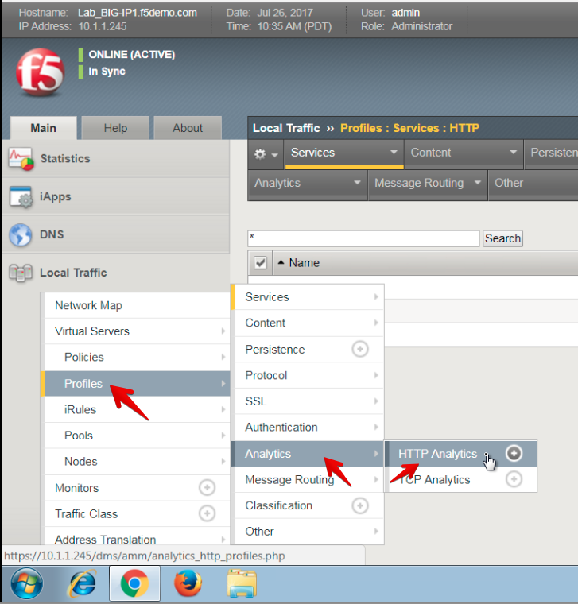
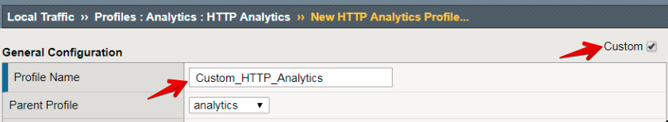
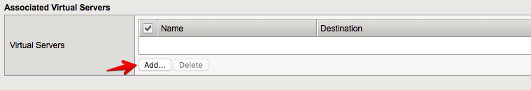
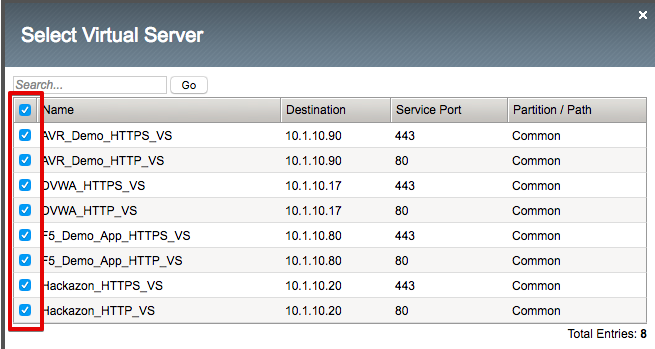
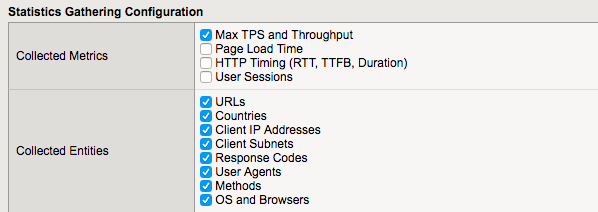

2.1.2. Task 2 – Create a new Analytics profile and attach it to your Virtual Servers¶
On the Active unit, go to Local Traffic >> Profiles >> Analytics >> HTTP Analytics

Click Create
Click the Custom checkbox in the top-right
Type in Custom_HTTP_Analytics for the Profile Name

Under the Associated Virtual Servers section, click Add, and then select all listed Virtual Servers. This will add this profile to all the virtual servers simultaneously without having to individually modify each virtual server.


Under the Statistics Gathering Configuration, checkmark the following options:
- Max TPS and Throughput
- URLs
- Countries
- Client IP Addresses
- Client Subnets
- Response Codes
- User Agents
- Methods
- OS and Browsers

Scroll to the bottom and click Finished
You have now configured your BIG-IP device to collect analytics data and start processing it.
Note
Please note that it typically takes 5-10 minutes for the system to start analyzing the data. Please wait at least 5 minutes before proceeding to the next task.